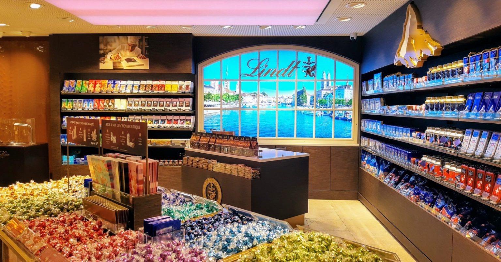

Suíça: conheça o país com a melhor
qualidade de vida do mundo!!
De acordo com o índice publicado pelo site Numbeo, a Suíça é o país com melhor qualidade de vida em 2022. O índice considera diversos critérios como poder de compra, índice de poluição, custo de vida, segurança, saúde, entre outros.
Por que viajar para a Suíça?
Pense em um país com paisagens naturais e cidades belíssimas, com uma cultura preservada e presente na
vida das pessoas e uma culinária de fazer inveja. A Suíça é tudo isso e muito mais. E quem ainda não
conhece esse pequeno país, não imagina o tamanho do espaço que ele vai tomar do seu coração!
Famosa pelos queijos, chocolates e relógios que nunca atrasam, a Suíça é uma mistura de cidades
cosmopolitas, com pequenas vilas cheias de charme.
Além disso, há destinos legais para visitar o ano
todo, com destaque para o inverno suíço, quando milhares de turistas vão atrás das famosas estações de
esqui se aventurar na neve.
Com influência alemã, francesa e italiana, passear pelas diferentes regiões da Suíça faz com que você se
sinta como se estivesse passando por todos esses países, mas ainda assim com um algo a mais que é
característico da própria Suíça.
Chocolatras de plantão!
A Suíça é conhecida no mundo todo por seu chocolate de qualidade e por seus fabricantes, como: Nestlé, Toblerone, Lindt e Milka. Só de pensar num chocolate suíço já dá água na boca. O terceiro maior fabricante mundial de chocolate e um dos maiores exportadores, a Suíça é a maior consumidora desta iguaria no mundo. Em média, o suíço come por ano 9 kg de chocolate. Para efeito de comparação, nós brasileiros só consumimos 2,6 kg por ano, menos de 30% que um suíço. Você chocolatra como eu deve ter pensado: eu contribuo com bem mais de três quilos por ano, certo?
O suíço é tão apaixonado por chocolate que nos mercados a sessão desta iguaria sempre tem destaque e o país abriga o maior museu de chocolate do mundo.
Clima na Suíça
O clima na Suíça é temperado e sua amplitude térmica costuma ser bem grande. Por exemplo, é possível que a temperatura varie entre – 3ºC e 18ºC nos meses de inverno em um mesmo dia. Outra característica marcante do clima na Suíça é que as estações do ano costumam ser muito bem definidas. Fatores como altitude, disposição das montanhas e distância do mar afetam o clima do país.
A presença de grandes massas de água dos lagos ajuda a criar diversos microclimas no interior do país. Em algumas regiões, neva bastante no inverno e nos meses de verão, a temperatura varia entre 18°C e 28°C. A temperatura média do outono e primavera fica entre 8°C e 15°C, mas as temperaturas podem variar muito conforme a altitude local.
Alpes Suíços?
Os belos alpes que cobrem a região central da Europa são mundialmente famosos e conhecidos como Alpes Suíços. Entretanto, menos de 15% desta área montanhosa europeia está na Suíça. A região se divide ainda com a França, Áustria e a Itália. Mas vale destacar que os Alpes fazem parte da cultura suíça e são a principal atração turística do país. O lindo Matterhorn (foto abaixo) fica na Suíça. O país tem os picos mais altos da Europa, são 48 acima dos 4 mil metros.